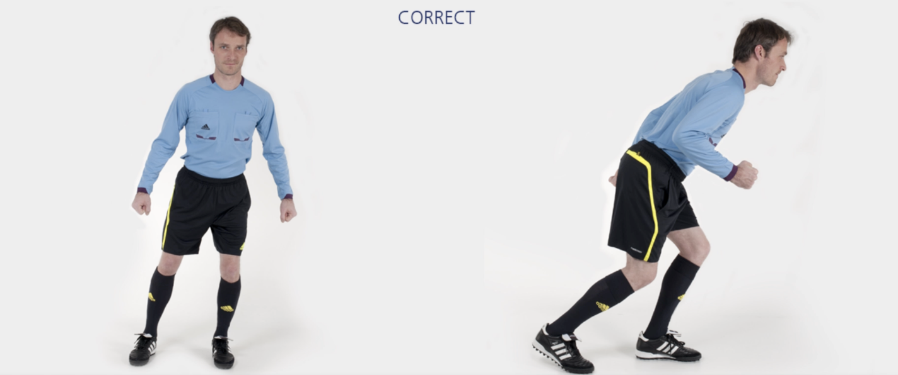
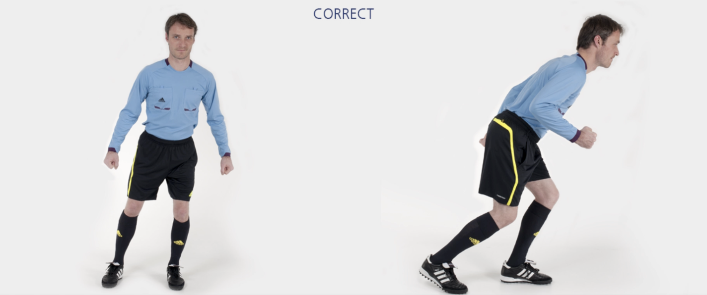

主裁 – 侧滑步 + 短距离快速跑
从第一个标志筒出发，侧滑至第二个标志筒，快速跑至对侧下一个标志筒。重复上述侧滑步+快速跑交替练习。最后沿场地外侧慢速跑回。
✌️ 本练习需完成两次。
⚠️ 注意事项
- 臀部、膝盖略微弯曲，将身体重心置于前脚掌；
- 上半身保持挺直。
❗️ 切忌膝盖内扣。
🎬 动作示范

从第一个标志筒出发，侧滑至第二个标志筒，快速跑至对侧下一个标志筒。重复上述侧滑步+快速跑交替练习。最后沿场地外侧慢速跑回。
✌️ 本练习需完成两次。
⚠️ 注意事项
❗️ 切忌膝盖内扣。
